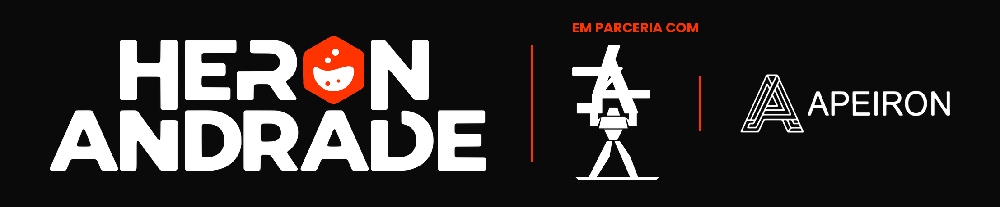

ENEM 2026
Revisão de reta final · 2º dia
Radar ENEM 2026
Ciências da Natureza
Física, Química e Biologia em um plano de quatro dias.
Leve seu progresso com você
O arquivo inclui Natureza e Matemática. A importação soma os temas revisados às marcações deste navegador.
Progresso da revisão
Marque os temas de Física, Química e Biologia conforme você revisar. O progresso fica salvo neste navegador.
4 dias, agrupados por contexto
Os temas são agrupados por contexto. Os três primeiros dias misturam as matérias e o quarto concentra Biologia. Dentro do dia, comece pelos muito prováveis. Toque num dia para filtrar os temas.
Véspera: nada de conteúdo novo. Releia só as armadilhas universais e os contextos cruzados abaixo, durma cedo e confira documento, caneta preta transparente e horário.
O que mais cai nos simulados e o que o PPL 2025 cobrou
Os três radares cruzaram a prova do ENEM PPL 2025 (aplicada pelo INEP, a referência mais próxima do estilo atual) com as questões de 39 simulados nacionais. Os números abaixo saem diretamente desses materiais.
= tema cobrado no PPL 2025. Cada matéria conta de um jeito (Física e Química por subtópico, Biologia por arquétipo de questão), então compare as barras dentro do mesmo painel, não entre painéis. Toque numa barra para abrir o tema; temas sem contagem específica ficaram de fora do gráfico.
Raio-X da Química em 270 questões de Natureza
Cada questão dos seis cadernos foi lida, separada por matéria e classificada pelo tema do radar, pelo tipo de comando e pelo contexto.
Química: questões por tema do radar
6 simulados · ordenado pela frequência no SAS · rótulo = nível no radar
Por área
das questões de Química
Por tipo de comando
das questões de Química
Radar × SAS
onde as duas fontes divergem
Todas as questões de Química
Deslize a tabela para os lados para ver todas as colunas.
| Questão | Tema do radar | Contexto | Comando |
|---|
Apostas temáticas
Blocos de contexto que se repetem entre os simulados SAS e os temas do radar. Cada aposta traz a evidência (questões e temas), o núcleo a dominar e a forma de comando que mais apareceu.
Contextos que aparecem em mais de um radar
Se um contexto real aparece em dois ou três materiais, ele tem cara de questão interdisciplinar. Domine os dois lados de cada um. Toque num código para abrir o tema.
Armadilhas universais
Quase todo distrator dos radares cai num destes padrões. Antes de marcar a alternativa, passe por esta lista mentalmente.
De onde vem cada tema
A BNCC organiza Ciências do 1º ao 9º ano em três unidades temáticas. Cruzando as habilidades do 2º ao 9º ano com o radar, dá para ver o que o ENEM aprofunda a partir do Fundamental e o que só existe no Ensino Médio. Cada card de tema mostra o código da habilidade de base.
Tema a tema
Progresso da revisão
Marque os temas conforme você revisar. As fichas e as questões mapeadas ficam disponíveis neste navegador.
4 dias, agrupados por contexto
Comece pelos muito prováveis de cada dia. Toque em um bloco para ver as fichas correspondentes.
O que mais cai em Matemática
Os gráficos contam cada questão pelo assunto principal. Nas fichas, a frequência publicada usa o recorte de padrões selecionados para o Radar.
Cada gráfico usa sua própria escala. Toque num assunto para abrir a ficha relacionada ou consultar suas questões na base.
Raio-X por banca e caderno
Compare as bancas e os cadernos do mapeamento de Matemática. Selecione uma banca ou um caderno para atualizar os gráficos e a consulta.
Ver perfil das questões
Os valores das barras são contagens no recorte selecionado. Clique em uma barra para abrir as questões correspondentes.
Comparar bancas e cadernos
Consulta de questões mapeadas
Deslize a tabela para os lados para ver todas as colunas.
| Questão | Assunto | Cobrança | Habilidade | Arquétipo |
|---|
Os roteiros que se repetem
Um arquétipo reúne questões com a mesma estrutura de cobrança em pelo menos três cadernos. Abra o roteiro para ver como reconhecer o padrão e montar a conta.
Top 30 · A sacada da questão
Seleção editorial de 225 candidatas, avaliadas em cinco eixos. Abra o enunciado para tentar a questão. A sacada, a resolução e o gabarito ficam em um detalhe separado.
O que já caiu junto e como pode cair
As frequências vêm das questões mapeadas. Os cenários são propostas de treino da Etapa 4, com contexto, comando e armadilha.